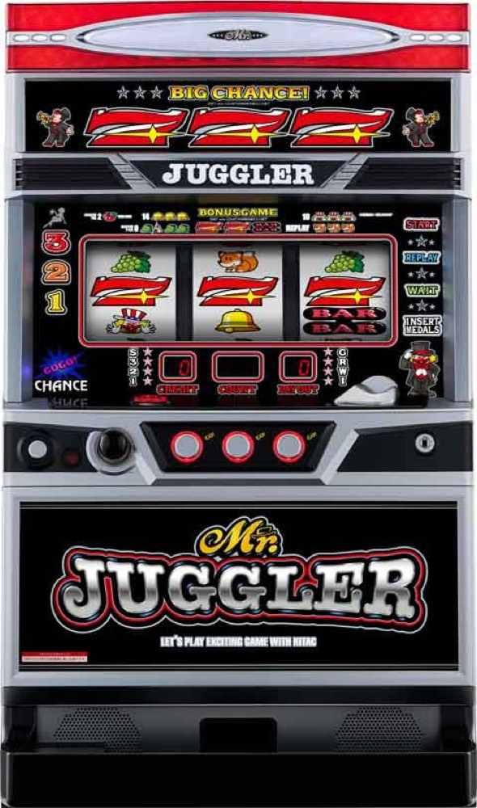

ミスタージャグラー
ピエロとチェリーの同時抽選を搭載した新シリーズ。
- 導入
- 2024年7月
- メーカー
- 北電子
- 分類
- パチスロ
主要スペック
ミスタージャグラーの公式設定別確率を使い、次のBIG・REGまで進めながらボーナスごとに続行を選べます。設定は終了時に発表し、上限は8,000Gです。
- 設定1〜6均等ランダム
- ボーナスごとに続ける・やめるを選択
- 8,000G完走時だけランキングへ登録
ミスタージャグラーの見どころと計算条件
ミスタージャグラーの公式設定別確率を使い、次のBIG・REGまで進めながらボーナスごとに続行を選べます。設定は終了時に発表し、上限は8,000Gです。
ミスタージャグラーを数字で早分かり
ボーナスごとに続行を選び、終了時に設定・BIG回数・REG回数・差枚・収支をまとめて確認できます。
次のボーナスまで進んで続行判断
設定1〜6を均等抽選し、公式BIG・REG確率で次の当選までのゲーム数を抽選します。ボーナス後は続けるかやめるかを選べます。
設定は終了時に発表し、途中終了はマイ記録へ、8,000G完走時だけ機種別ランキングへ登録できます。
設定差はREGと合算を合わせて確認
設定1の合算約1/156.4から設定6の約1/118.7まで、公式の設定別確率と出玉率を使用します。
ピエロ・チェリーの同時抽選や告知演出は個別再現せず、BIG・REG回数と差枚を比べる簡易モデルです。
設定1〜6ランダム・8,000G固定の計算
START時に設定1〜6を均等抽選し、設定は最終結果まで伏せます。選ばれた設定のBIG・REG確率を使い、8,000Gを1ゲームずつ抽選します。設定1の基準値はBIG約1/268.6、REG約1/374.5、合算約1/156.4です。
抽選された設定の出玉率とボーナス理論回数を基準に差枚を計算します。46枚貸し・5.2枚交換で固定し、結果・マイ記録・ランキングに設定を表示します。
ジャグラー4機種の8,000G理論回数比較では、BIG・REGの期待回数と結果のブレを一覧で確認できます。
シミュレーション結果の見方
ボーナス何GでBIG・REGに当ったか
続行判断ボーナスごとに続ける・やめるを選択
実戦データ総G数、BIG・REG回数、合算
最終収支差枚と5.2枚交換の収支目安
結果は自動で「マイ記録」に保存され、同じ機種を何回試したか、最高収支、勝率をあとから確認できます。
簡易シミュレーターについて
8,000G・BIG・REG・差枚の流れを固定条件で体験できます。JavaScriptを有効にすると、この位置にシミュレーター、演出、マイ記録、機種別ランキングが表示されます。
結果は娯楽・確率理解のための参考表示です。金銭的価値や交換価値はなく、実際の勝敗や収支を保証しません。18歳未満の方の利用はお控えください。
ミスタージャグラーのよくある質問
ミスタージャグラーはどんな台？
ミスタージャグラーの公式設定別確率を使い、次のBIG・REGまで進めながらボーナスごとに続行を選べます。 設定1〜6均等ランダムが主な確認ポイントです。
ミスタージャグラーの平均投資目安は？
設定1基準のボーナス合算初当り約1/156.4と、50枚あたり40G・46枚貸しの固定条件から、平均4,300円を目安として表示します。実際の設定や遊技状況で結果は変わります。
設定とゲームの流れはどう抽選する？
開始時に設定1・2・3・4・5・6から1つを均等抽選し、最大8,000GまでBIG・REGを抽選します。設定は終了時の結果とランキングに表示します。
収支はどう計算する？
1,000円46枚貸し・5.2枚交換の固定条件で投資、換金、収支目安を計算します。実店舗の再プレイ、持ちメダル、端数処理は含みません。